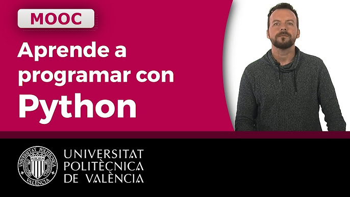

El curso de la Universidad de Valencia para programar: es gratis
En la actualidad, muchas personas aspiran a capacitarse en lenguajes de programación y tecnología, debido a que el sector tecnológico es uno de los mejores pagos del país. No obstante, aprender un lenguaje de programación lleva tiempo y encontrar el primer trabajo en el sector IT puede ser dificultoso. Por esta razón, las personas con más experiencia en el rubro recomiendan probar capacitaciones cortas y gratuitas como también crear un portfolio de proyectos en Github, una herramienta colaborativa que permite a los desarrolladores guardar sus códigos, para luego poder presentarlo en una empresa y conseguir trabajo con mayor facilidad. En este contexto, uno de los lenguajes de programación más populares es Python. Se trata de un lenguaje flexible que es utilizado para el análisis de datos, la ciencia de datos, la inteligencia artificial, y más. Según el sitio de sueldos Glassdoor, un desarrollador Python gana en promedio $117.000 en la Argentina. El sueldo más bajo ronda los $60.000; y los profesionales con más experiencia pueden superar los $246.000. Para aprender Python de cero, se recomienda realizar una capacitación de la Universidad de Valencia. A continuación, cómo acceder al curso gratis.
LA UNIVERSIDAD DE VALENCIA ENSEÑA PYTHON GRATIS: DE QUÉ SE TRATA
La Universidad de Valencia lanzó un curso gratuito que enseña los pilares básicos del lenguaje de programación Python, uno de los más utilizados y demandados por las empresas hoy en día. Esta capacitación es introductoria por lo tanto, se explican desde cero los fundamentos de programación como son las variables y constantes, las condiciones, los bucles y los módulos y funciones, para luego abocarse en el tratamiento de cadenas de texto y los ficheros. De esta forma, al acabar el curso el alumno será capaz de realizar programas útiles a la hora de procesar datos de diversas fuentes para obtener conclusiones de negocios. Para anotarse en dicha capacitación digital de la Universidad de Valencia contacta con ellos directamente.